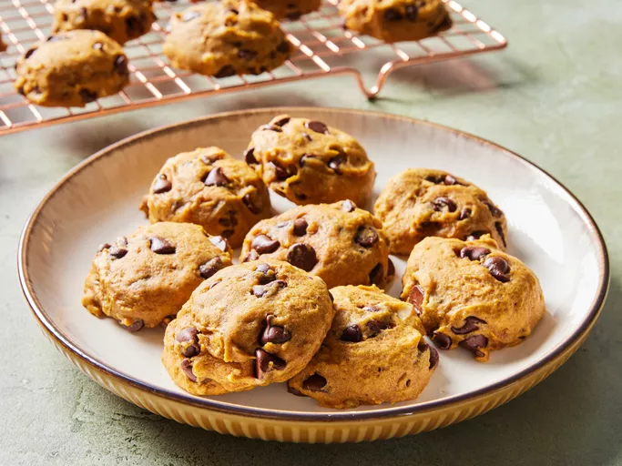

Pumpkin Chocolate Chip Cookies

Description
These pumpkin chocolate chip cookies are perfect for those of us who love all things pumpkin pie and chocolate. These cake-like cookies are always a big hit. I think they taste best when they are cold from the refrigerator.
Ingredients
- Sugar: A cup of white sugar lends the perfect amount of sweetness.
- Oil: A neutral oil, such as vegetable oil, lends moisture without imparting flavor.
- Egg: An egg adds even more moisture and helps bind the dough together.
- Leaveners: Baking soda and baking powder act as leaveners, which means they help the cookies rise.
- Milk: Dissolving the baking soda in milk speeds up the leavening process.
- Flour: All-purpose flour gives the pumpkin chocolate chip cookie dough structure.
- Cinnamon: Ground cinnamon adds warmth to the sugary sweet cookies.
- Salt: A pinch of salt enhances the overall flavor of the cookie dough.
- Walnuts: Walnuts are optional, but they add welcome crunch.
- Chocolate: You'll need two cups of semisweet chocolate chips.
- Vanilla: A dash of vanilla extract takes the flavor up a notch.
- Pumpkin: Use store-bought canned pumpkin or homemade pumpkin puree.
Steps
You'll find the full, step-by-step instructions below but her's a brief overview of what you can expect when you make pumpkin chocolate chip cookies:
- Combine the wet ingredients. Dissolve the baking soda in milk, then stir it in.
- Combine the dry ingredients, then stir the mixture into the wet ingredients.
- Stir in the walnuts, chocolate, and vanilla.
- Drop the dough onto cookie sheets and bake until the cookies are firm.